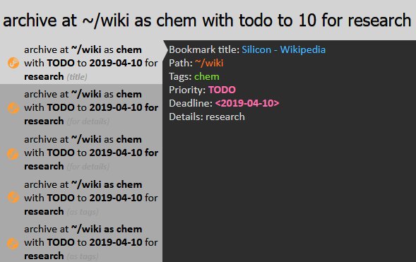

What is Scrapyard?
Scrapyard is a Firefox bookmarking extension where you can store and organize bookmarks, page fragments or complete documents in unlimited quantities. By utilizing browser local storage Scrapyard does not require external tools to operate and allows to import/export data in org-mode or JSON formats.
Where to Find Scrapyard
Scrapyard is accessible through the Firefox sidebar dropdown menu as shown in the image below. The sidebar itself could be opened with the
corresponding toolbar button: 

Additionally, the
customizable keyboard shortcut Alt+Y allows to open Scrapyard directly.
General Features
Capturing Pages
To capture a web-page or its fragment, select the page part you want to archive, open Scrapyard popup window
by clicking the icon on the browser toolbar, choose the destination shelf and folder, then press "Bookmark"
or "Archive" button. The "Bookmark" button stores only web-page URLs, while the "Archive" button stores
the current selection, the whole page (if there is no active selection) or the whole document, if the opened
link is not a web-page.

Bookmark Shelves
It is possible to create an unlimited amount of bookmark shelves to structure your bookmarks. The shelf named "everything" allows to browse and search through all existing shelves. Scrapyard built-in shelves are listed in bold font and cannot be deleted or renamed (including the "default" one).

In the bookmark tree archived pages are marked with the italic font, while ordinary bookmarks have the regular one.
Cloud Bookmarking
Adding or copying/pasting bookmarks into a special shelf named Cloud makes them available across different Firefox instances that use the same cloud provider. Cloud providers are configurable at the addon settings. Scrapyard application for Android allows to share links and content to the Cloud shelf from mobile devices.

Sharing Bookmarks
A bookmark or archive could be shared to either Pocket or Dropbox through the "Share" context menu of the item. Files that are shared to Dropbox appear at the "Apps/Scrapyard" Dropbox folder. Only links could be shared to the Pocket application.

Firefox Bookmarks
Scrapyard seamlessly integrates with Firefox bookmarks, so there is no need to switch to the built-in bookmark manager. You may attach comments and TODO states to Firefox bookmarks displayed in Scrapyard, although they will be lost if the bookmarks are deleted from Firefox UI, or after "Show Firefox bookmarks shelf" option in settings is unchecked. Firefox bookmarks are included in the export but are imported as a separate Scrapyard shelf, leaving the current Firefox bookmark state intact.

TODO
It may be convenient to prioritize your bookmarks for processing. Each bookmark may have one of the following TODO priorities: TODO, WAITING or POSTPONED. You may find all your prioritized bookmarks at the built-in shelf named TODO, sorted in the corresponding order. All bookmarks marked as DONE or CANCELLED are displayed at the DONE shelf.

If the path of a bookmark provides not enough context, it is possible to fill the "Details" and "Date" fields of the bookmark property dialog. Only ISO (YYYY-MM-DD) date format is supported. Expired TODO items will be displayed first regardless of the assigned state.
Markers
Every archived page provides an editing toolbar which offers several types of text markers and also allows to clean pages of unnecessary elements by text-selecting and deleting document content or images. Click the "Edit document" button to start page cleaning. It is also possible to type in something, press F7 to display the caret. The HTML code of a page may be modified through the browser developer's tools accessible by "F12" keyboard key.

The "Auto open" check makes the marker menu to open automatically when some text is selected.
Bookmark Comments
While the "Details" field in the bookmark properties is intended for display at the TODO shelf, bookmark property dialog also allows to enter quick comments by clicking on the "page" icon at its top-right corner.

Subsequent clicks on the icon alternate between the comment input field and bookmark properties.
The comment icon of bookmarks with filled-in input field takes the form of a "lined page".

Notes
It is possible to attach more elaborate text notes to every bookmark or even create dedicated note-only bookmarks. Click "Open notes" in the context menu of a bookmark to show its note editor/viewer. Click "New notes" in the context menu of a folder to create a note-only bookmark. Items with non-empty notes are highlighted by the underlined text in the bookmark tree.

By default, notes could be entered in HTML (using a visual editor), and additionally in Markdown, org-mode markup or plain text. The format selector dropdown list is available at the bottom left corner of the "Edit" tab.
A short CSS-style may be placed at the first lines of the notes to modify their appearance. For example, to change the width of HTML-formatted notes place the following snippet at the beginning of the document markup:
<style>
#notes {
width: 600px;
}
</style>
The markup of HTML-formatted notes is accessible through the corresponding editor button:
Notes in Org format may have an automatically generated table of contents. Insert an example markup into the note editor to explore what options are available.
Referencing to a bookmark or archive
To make a reference to a Scrapyard bookmark or archive from the note markup create a link with the following URL:
ext+scrapyard://<BOOKMARK UUID>, for example:
ext+scrapyard://A4D409A0D1034D9BA0863E9DA8CE8FE7
When necessary, it is possible to add a hash with a link description:
ext+scrapyard://A4D409A0D1034D9BA0863E9DA8CE8FE7#short-bookmark-description
To refer the notes of a bookmark add notes: before the UUID:
ext+scrapyard://notes:A4D409A0D1034D9BA0863E9DA8CE8FE7
UUID of a bookmark is available from its property dialog:

Import/Export
Scrapyard allows to import bookmarks in Netscape HTML format which you may obtain from Firefox, Chrome or other web-browsers. It is also allows to import and export its own collections of bookmarks or archived pages in ORG and JSON formats through the corresponding item in the shelf operations menu:

Install Scrapyard helper application if you need to export the large amounts of content.
To import legacy ScrapBook RDF archives you also need to install Scrapyard helper application. There are two import modes: quick import which leaves archived Scrapbook files on disk, and the full import, which transfers saved pages into Scrapyard database. Some features, such as page editing and transferring/copying of bookmarks are not available for the shelves imported in quick mode. See the "Import RDF" tab of the settings page for more details.
Advanced features
Text Command Interface (optional)
It is possible to issue commands to Scrapyard through the text command interface offered by iShell Extension. To control Scrapyard by text commands just install iShell. In most cases, the command interface allows to significantly reduce the number of actions needed to create a bookmark or archive a page.
The "bookmark" and "archive" Commands
Use the "bookmark" or "archive" commands with the corresponding parameters to bookmark/archive a page into the specified destination. Folders in the path will be created automatically if they do not exist. The first folder in the bookmark path is always interpreted as the name of a bookmark shelf. The tilde (~) character may be used in place of the "default" shelf name. Contents of Firefox "Bookmarks Menu" and "Other Bookmarks" may be accessed with the "@" and "@@" shortcuts respectively.

The "scrapyard" Command
The "scrapyard" command allows to browse and filter captured bookmarks. See iShell command help for more details.

Creating Custom Capture Commands
If you often save bookmarks with similar properties to the same destination, it is possible to create custom capture commands with predefined parameters. "CAPTURE" link at the bottom-right corner of iShell command editor allows to insert a template of a such command. In addition to the predefined parameters, custom capture commands allow to specify (comma-separated) CSS selectors for elements that will only be retained or deleted automatically. A custom CSS-style could be inserted into the captured document through the "style" option.